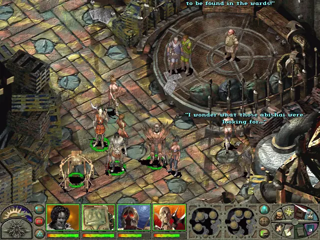
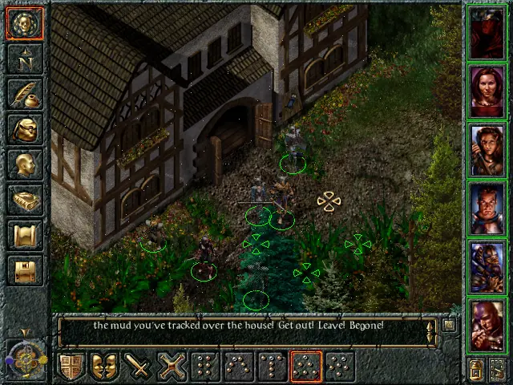
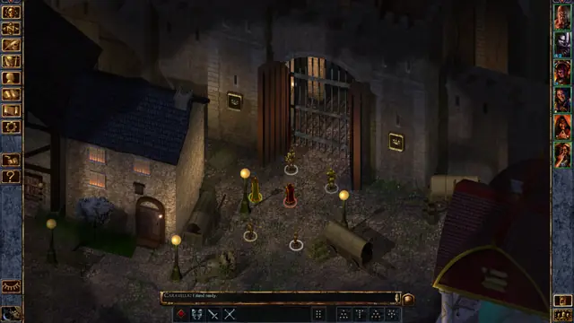
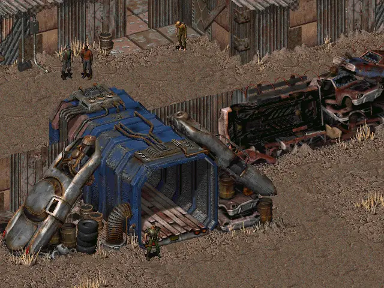
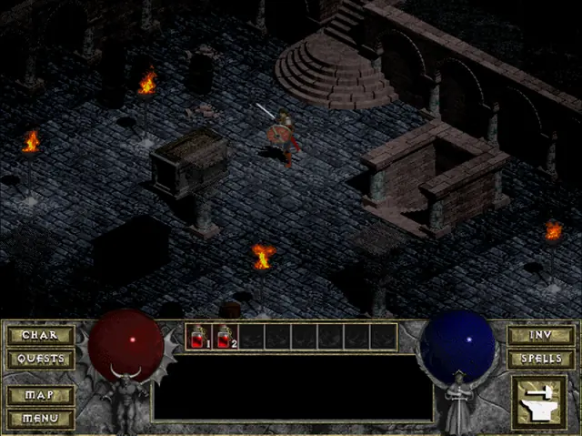
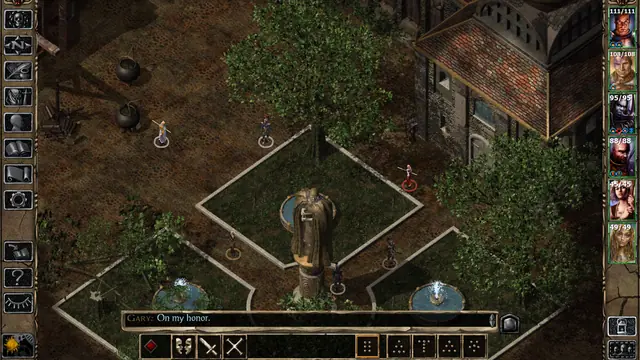
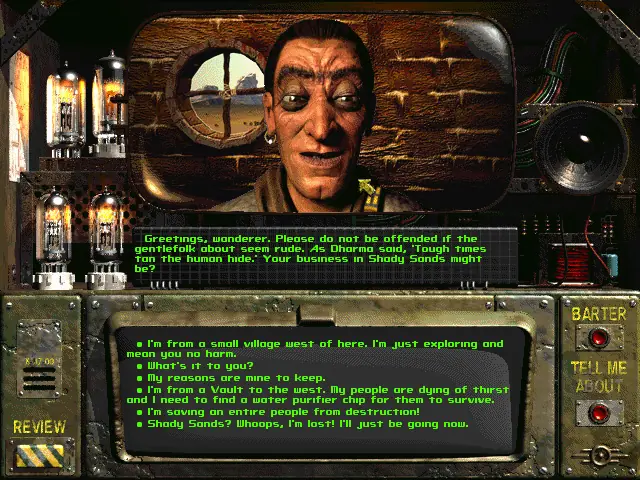
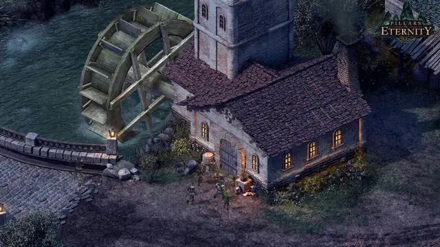
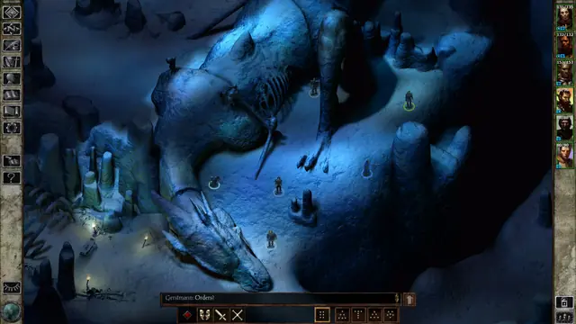

The feel
The late-90s isometric RPG looks down on a painted world. Each area was built from 3D elements and flattened into a single pre-rendered image,1 which let BioWare show far more detail than real-time graphics of the time allowed.2 Watching BioWare's demo at Interplay, Brian Fargo thought "it looked like somebody had free-hand-drawn every single screen".1 Around the view sits a wide frame: Ray Muzyka wanted to "look through his interface down onto the world", so Baldur's Gate puts commands on the left, party portraits on the right and text along the bottom.1,3
It is a style for reading and planning. You pause a fight, set up the whole party, then unpause and watch it play out, which James Ohlen likened to watching "a little movie go off".1 The camera is too far back for a face to carry a scene, so the words do, and Josh Sawyer enjoys writing what is "out of the camera's eye, but is within the mind's eye".4
- pre-rendered
- lamplit
- wordy
- tactical
- dusty
- carved
- pause-and-think
Where it comes from
Diablo (1996) began as a turn-based game until, at Blizzard's request, David Brevik "made the turns happen 20 times a second",5 and it drew its world in 2D at 640 by 480 with 8-bit colour.6 Fallout (1997) used "3D programs to make 2D sprites", seen from an oblique, trimetric angle rather than a true isometric one.7,3 BioWare's Infinity Engine grew from a tech demo built around one large scrolling bitmap into Baldur's Gate (1998), and Black Isle licensed it for Planescape: Torment and Icewind Dale.1,3,8 In 2012 Obsidian's Kickstarter promised that Pillars of Eternity would "pay homage to the Infinity Engine games of years past".9
Core elements
Pre-rendered isometric backgrounds
Each area is built in 3D and flattened into one pre-rendered image, so lighting and depth that would be too heavy for a low-end computer in real time become flat artwork that almost any machine can show.1 Each Baldur's Gate backdrop had a native size of 5120 by 3480 pixels,2 and you look down on it from a free-scrolling isometric view.3
Small figures and portraits
Figures are small: Diablo II's heroes are only 75 pixels tall in play.6 Seen from that height, "a lot of a character's form is completely lost", so each figure has to read at a glance, and finely detailed equipment is left for the paper-doll screen.10 Each party member also has a portrait down the right side of the screen, showing health, attack order and effects such as curses.1,3
In-world interface frame
Leonard Boyarsky's rule for Fallout was that "the interface should look like it's an object you would find in the game", and Chris Taylor describes its UI as a decrepit computer "bandaged back together".7 Baldur's Gate and Icewind Dale set their buttons against stone.10 The frame is wide on purpose: Baldur's Gate's interface is "fat to cover up the screen", so less background has to be drawn.2
Text-heavy dialogue panels
There is an awful lot to read, mostly menu-driven conversations in a panel above the bottom row of icons, with only the occasional line voiced to set a character's tone.3 Because the camera is too far back for facial expressions, the writers spell out actions, gestures and expressions in prose, as they would in a novel.4
Cutaway rooms and fog of war
Ground your party hasn't seen yet is blacked out by a fog of war.3 Interiors leave out the walls that face the camera and paint the tops of the rest black, so the room sits "in a black void". Obsidian's first prototype dungeons for Pillars of Eternity missed this Baldur's Gate trick and "didn't look anything like that".9
Real-time combat with pause
Fights run in real time, but the space bar pauses them so you can give the whole party orders and then let them play out.3 BioWare reached this as a compromise between Ray Muzyka's love of turn-based Gold Box games and James Ohlen's faith in real-time games such as WarCraft II and Diablo.1 The Dungeons & Dragons rounds are still there, six seconds long, just not announced.3,11
How to do it
Set up a fixed orthographic camera
Render everything from one angle. Set the camera to orthographic, tilt it 60 degrees from looking straight down and turn it 45 degrees around the vertical axis for the usual 2:1 isometric look.12 Fallout's team got its flat view by pulling the camera back "to infinity" and zooming in, so lines stay parallel and buildings don't shrink as they rise, and even the dirt had to be rendered "from the same perspective and angle as everything else".7
Plan on a diamond grid
Draw layouts on isometric paper, which has rows of diamonds instead of squares. Josh Sawyer laid out areas for Pillars of Eternity as sketches "on a diamond grid" before handing them to an artist.8 Turn paths so that none runs parallel to the edges of the screen,11 and make ramps climb as they go up the image, because a slope falling away from the camera "ceases to read as a ramp".9
Grey-box the area and render passes
Block each area out as a grey box, then build it from tile sets of walls, floors and props before adding lighting and detail.11 Render it as one large image. Obsidian rendered Pillars of Eternity's backgrounds as final, depth, normal and albedo passes, which the game combines so that 3D figures pass behind scenery and catch real-time light.13
Paint over the render
Icewind Dale's backgrounds were "hand-painted over simple 3D renders", because painting details such as vines on a brick wall in 2D was faster than texturing them in 3D.7 Obsidian later had the renderer output an ambient occlusion pass in black and white, and used it as a mask for painting dust and grime into dungeons.14
Cut the backdrop into tiles
Baldur's Gate cut each backdrop into 64 by 64 tiles, each with its own palette of 256 colours, and loaded them as the player moved.2 Diablo II cut its rendered backgrounds into tiles and assembled them into modular rooms.6 Mark what figures can walk behind: BioWare clipped objects out of its backgrounds by hand so that characters could pass behind walls.2
Render the sprites from 3D models
Leonard Boyarsky's answer on Fallout was "using 3D programs to make 2D sprites".7 Diablo II modelled its characters in 3D and rendered them from eight angles for monsters and 16 for heroes, who end up 75 pixels tall on screen.6
Match character lighting to the painting
Pillars of Eternity lights its 3D characters with a key light that matches the scene's sun and a fill light so that their backs aren't black, both set per scene to match the pre-rendered lighting.13 It also takes ambient colour from the background, tints character shadows to match the painted ones, which are often blue, and lets a torch light both the painting and the figure standing next to it.13
Cheat sheet
Do
- Build places people could live in. Rob Nesler's rule for Pillars of Eternity was to "assemble things in a way that looks like human beings would build them and live in them".11
- Make towns neither too spread out nor too small, with every path feeding into the square where players talk, trade and pick up quests.11
- Keep fine details such as earrings and shirt buttons for the portrait and paper doll. On the small figure in the game, "you won't see it".10
- Make the interface an object from the world, like Fallout's battered computer or Pillars of Eternity's wooden board laid with parchment.7,10
- Let players set auto-pause conditions, such as a badly wounded character, so that big fights stay readable.3
Avoid
- Paths that run parallel to the edges of the screen. Hector Espinoza calls them "the biggest no-no": set everything at least at a slight angle so that areas don't look flat.11
- Narrow spaces planned from above. Josh Sawyer found they can become "incredibly frustrating" at an angle, and in Icewind Dale a wall hid a floor tile the player had to click.8
- More detail than the resolution can hold. Jimmy Maher finds Baldur's Gate blurry from "a little bit too much detail being crammed into a relatively low resolution".3
- An interface that puts looks before use. Maher counts this against Fallout,3 and Kaz Aruga found that when he went overboard on parchment textures, text scrolling over them "looks like garbage".10
Tools and tutorials
- Godot TileMap
Godot's tile maps. Read the y-sort settings that decide which tiles a figure walks in front of.
- Unity Isometric Tilemaps
Unity's guide to isometric tile palettes, and to adding height with Isometric Z as Y.
- GemRB
A reimplementation of the Infinity Engine. Read its docs on areas and sprites.
- Blender orthographic camera
Set up a fixed orthographic camera to render backgrounds and sprites.
- Creating Isometric Tiles in Blender
Camera angles and sizes for rendering 2:1 tiles from Blender.12
Palette
Stone, bronze, parchment and green from Baldur's Gate's frame,10 red and rust from Planescape: Torment's dialogue panel, the speech colour from Fallout and the deep blue from Diablo's orb.
Feel the vibe
Listen
Heroic and orchestral. Listen to how it sets up a long campaign.
YouTubeSlow, strange and sad. Listen to how little melody it needs to set a mood.
YouTubeAmbient dread, more texture than tune. Try it under a long walk across an empty map.
YouTubeAcoustic guitar, slow and calm. Hard to hear without seeing the well.
YouTubeOrchestral and cold. Play it while you paint snow and ice.
YouTube
More references









Games
- Diablo
Study the stone panel with its red and blue orbs, and how dark the town is kept.
- Fallout
An oblique, trimetric view, an interface like a decrepit computer, and talking heads sculpted and then digitised.7
- Baldur's Gate
The blueprint: a free-scrolling isometric view, portraits down the right and a text panel at the bottom.3
- Planescape: Torment
Another Infinity Engine game from Black Isle, made alongside Icewind Dale.8 Study how much of the story it tells in text.
- Icewind Dale
Snowy mountains, tundra, caves and dungeons, built for party combat.8 Study how the lighting sets the mood.
- Baldur's Gate II: Shadows of Amn
The Infinity Engine at up to 800 by 600, with an option to hide the interface.15 Study its cities.
- Pillars of Eternity
3D characters over backgrounds rendered in Maya, lit to match the painting.13
Film, art and more
- Advanced Dungeons and Dragons, 2nd edition
The rules BioWare changed to make them work in real time for Baldur's Gate.1
- Planescape
The tabletop setting behind Planescape: Torment. Compare its illustrations with the game's Sigil.
- Beneath a Starless Sky
David L. Craddock's oral history of the Infinity Engine games and Pillars of Eternity, free to read online. Start with the chapters on Fallout, Baldur's Gate and Icewind Dale.
- Infinity Engine
BioWare licensed it to Black Isle so they could make more games on it.8
Sources
- 1Beneath a Starless Sky: Pause Screen: Green Team - How a Ragtag Band of Upstarts Created Baldur's Gate
- 2How the innovation of the Infinity Engine brought Baldur's Gate to life
- 3The CRPG Renaissance, Part 5: Fallout 2 and Baldur's Gate
- 4Beneath a Starless Sky: Soul Ex Machina
- 5The moment the action-RPG was born
- 6Postmortem: Blizzard's Diablo II
- 7Beneath a Starless Sky: Pause Screen: World on Fire - The Oral History of Fallout and Fallout 2
- 8Beneath a Starless Sky: Pause Screen: Where Winter Never Ends - The Freewheeling Development of Icewind Dale
- 9How Obsidian replicated the look of an Infinity Engine game -- in 2015
- 10Beneath a Starless Sky: Practicality First
- 11Beneath a Starless Sky: Building a Diorama
- 12Creating Isometric Tiles in Blender
- 13Update #79: Graphics and Rendering
- 14Beneath a Starless Sky: World of Mystery
- 15Baldur's Gate Sequel Unveiled